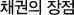

채권이해

-
수익성
저축시점에서 확정금리로 만기까지 수익이 보장되며, 채권은 표면금리에 대해서만 과세, 표면금리가 매입 금리에 비해 일반적으로 매우 낮아서 과세대상이 적으므로 세후 투자수익률이 높아집니다. 수익률 하락시 만기일 이전에 중도 매도하여 시세차익도 기대할 수 있다.
-
안정성
채권은 정부나 공공기관, 특수법인, 금융기관 및 상법상의 주식회사만이 발행하므로 안정성이 매우 높으며, 회사채의 경우도 원리금 지급을 대부분 금융기관이 보증하기 때문에 안정성이 높다.
-
유동성(환금성)
채권은 만기일까지 보유하여 확정된 이자와 원금을 받을 수도 있고 만기일 전에 증권회사 등을 통해 언제든지 팔아 현금화할 수도 있다.